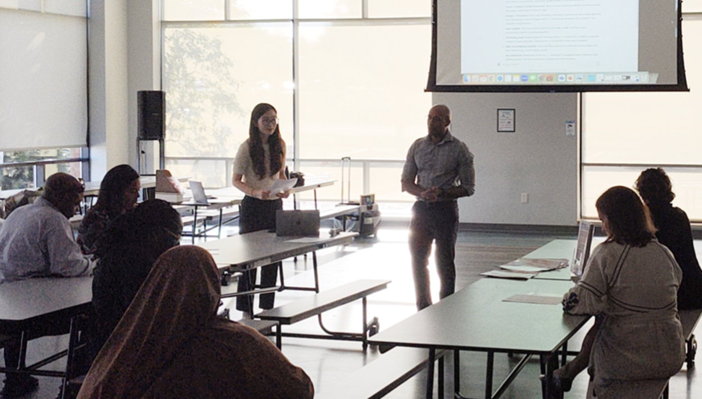
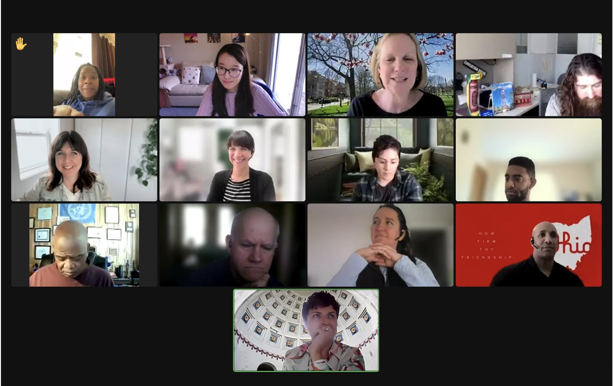
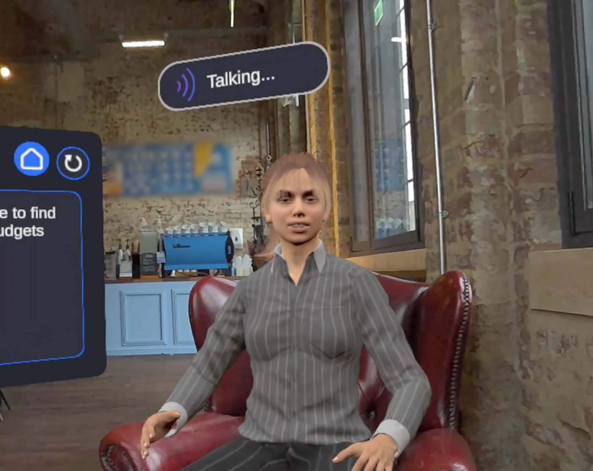
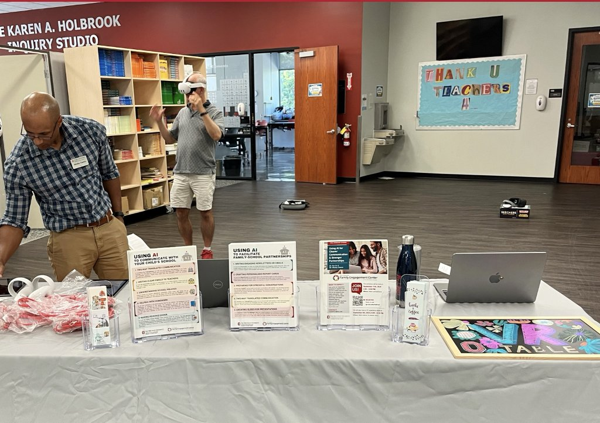
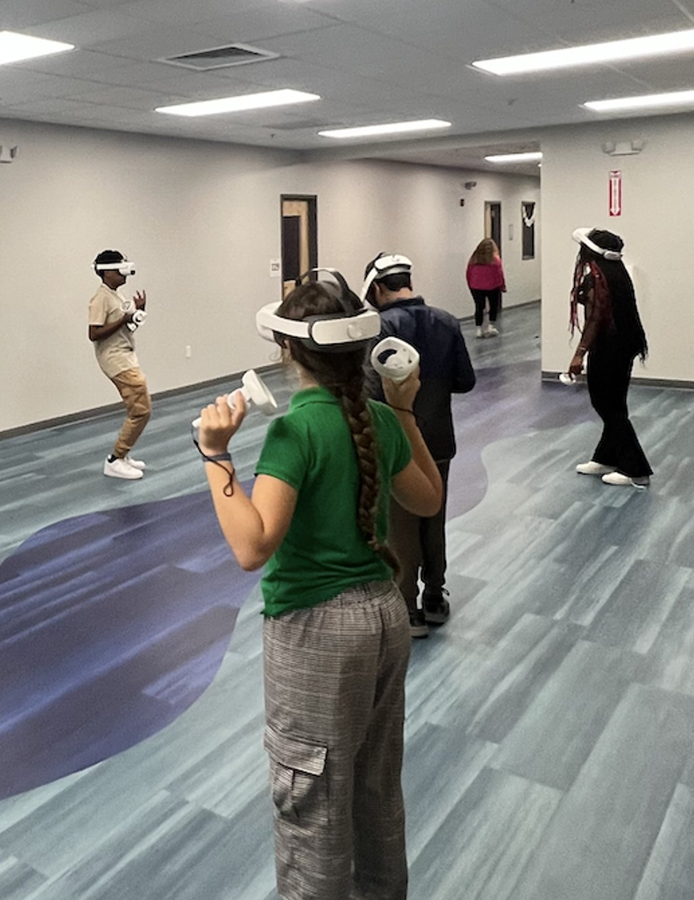

Advancing AI Literacy for Families and Schools in Ohio
This community-engaged research and development project brought AI literacy learning opportunities to educators, school leaders, and families in Ohio, with a particular focus on strengthening family–school partnerships. Supported by the Ohio Statewide Family Engagement Center as part of the broader OhioLEADs initiative, the project responded to practical challenges educators face, including limited time for family engagement and difficult conversations with caregivers.
Working with family engagement specialists and local K–12 partners, our team developed and delivered workshops for teachers, administrators, district leaders, and families, including immigrant families. We created accessible, audience-specific guidance, example prompts, and hands-on activities that invited participants to explore the opportunities and limitations of AI in everyday educational settings.
We also introduced immersive, AI-supported communication practice through a virtual reality experience station, where participants could explore realistic conversation scenarios and reflect on feedback. The work was shared with Ohio education stakeholders, including a state advisory council and attendees of the 2024 Ohio Family Engagement Leadership Summit. Across these outreach activities, the broader project reached more than 2,000 people. Our goal was not simply to introduce new tools, but to build confidence, informed judgment, and more meaningful connections between schools and families.





PI & Co-PIs

 Ana-Paula Correia
Ana-Paula CorreiaResearch Funding & Support
Funding source: Ohio Statewide Family Engagement Center
Institution: Ohio Statewide Family Engagement Center
Role: Lead PI (Co-PIs: Barbara Boone, Ana-Paula Correia)